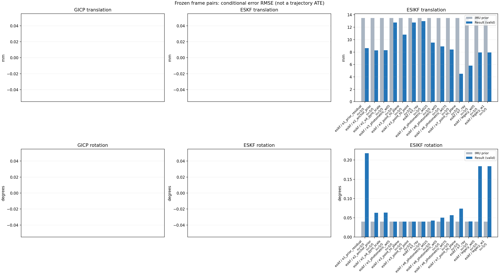

20261015_112659_forward · depth=disparity_cache · cache=3a215246cb903bdab54e
模型视差：/home/ubuntu22/slam/SIO_SLAM/models/tensorrt/disp_896x448_fp16.plan；engine SHA256=604cf6ac1f705c877260711730dd5d2d58c2a21f3020c03c668401ef7fb1e768。输入为生产裁剪与光照处理后的 RGB 0..255；此实验使用原始浮点像素视差，不应用完整前端的邻域视差后处理。
原始 ONNX SHA256：e9f49736a65d68d06681add463866b6defdf78fdd7f4f50f6cc941b682fdc0bc。
代价体图改写验证：ONNX Runtime 固定随机特征输入，最大绝对误差 0；该项检查图改写，完整模型精度仍需由录制数据评估。
配准代码版本：744ac2d993ae629b0cc44a3b1d995e04ab4fad48；观测生成版本：744ac2d993ae629b0cc44a3b1d995e04ab4fad48。
固定图像对与纯 IMU 先验；ESKF 回放固定 GICP 观测，ESIKF 直接读取点云。真值只用于此报告。
同时查看 converged 与 solver_status：上游默认 Stereo 在 max_iter / stopped_at_minimum 时也可能置 converged=true。valid 表示输入检查通过，不表示精度提升。欧氏 GICP 未提供独立的点距 RMSE，该列显示 NaN。
误差按每对图像的锚点计算，单位 m / degrees。此处 RMSE 不是全序列 ATE；末帧受同一锚点条件约束。NIS 与条件马氏距离是诊断量，少量相关图像对不能用于宣称协方差已校准。
全部指标 CSV · R / P 矩阵 CSV · Stereo 求解逐轮 CSV · ESIKF 逐轮轨迹 CSV · 末轮 H / R / K_pose 矩阵 CSV · 配置快照 · 矢量图
unflagged 排除纯惯性先验平移误差超过 50 mm 的图像对；whitened 为误差按协方差白化后的每自由度均值，协方差与实际误差相符时约为 1。
| stage | method | variant | valid | total | result_translation_rmse_m | result_rotation_rmse_deg | result_translation_median_m | result_rotation_median_deg | result_translation_rmse_unflagged_m | result_rotation_rmse_unflagged_deg | improved_translation | improved_rotation | posterior_whitened_by_P_rot_mean | posterior_whitened_by_P_trans_mean |
|---|---|---|---|---|---|---|---|---|---|---|---|---|---|---|
| esikf | esikf | e1_prior_residual | 5 | 5 | 0.0086257 | 0.21763 | 0.0081108 | 0.22336 | 0.0086257 | 0.21763 | 2 | 0 | 128.45 | 79.514 |
| esikf | esikf | e2_anchor_prior | 5 | 5 | 0.0082678 | 0.06323 | 0.00496 | 0.016583 | 0.0082678 | 0.06323 | 2 | 0 | 152.08 | 120.53 |
| esikf | esikf | e2_e4_gyro_scale | 5 | 5 | 0.0082868 | 0.063338 | 0.0049685 | 0.018939 | 0.0082868 | 0.063338 | 2 | 0 | 134.53 | 117.14 |
| esikf | esikf | e3_photometric_w05 | 5 | 5 | 0.012768 | 0.039927 | 0.0045781 | 0.0098258 | 0.012768 | 0.039927 | 5 | 4 | 94.037 | 23.302 |
| esikf | esikf | e3_point_to_plane | 5 | 5 | 0.010806 | 0.040273 | 0.0045085 | 0.010306 | 0.010806 | 0.040273 | 4 | 3 | 93.548 | 20.718 |
| esikf | esikf | e3_point_to_point | 5 | 5 | 0.012765 | 0.039926 | 0.0045781 | 0.0098234 | 0.012765 | 0.039926 | 5 | 4 | 94.036 | 23.304 |
| esikf | esikf | e3_ray | 5 | 5 | 0.012993 | 0.040294 | 0.0045376 | 0.01133 | 0.012993 | 0.040294 | 4 | 2 | 93.552 | 21.161 |
| esikf | esikf | e6_photometric_w025 | 5 | 5 | 0.009511 | 0.042757 | 0.0045692 | 0.010104 | 0.009511 | 0.042757 | 3 | 1 | 101.08 | 45.783 |
| esikf | esikf | e6_photometric_w05 | 5 | 5 | 0.0089115 | 0.050305 | 0.0047083 | 0.011984 | 0.0089115 | 0.050305 | 2 | 0 | 110.1 | 69.675 |
| esikf | esikf | e6_photometric_w075 | 5 | 5 | 0.0083964 | 0.056622 | 0.0048976 | 0.014939 | 0.0083964 | 0.056622 | 2 | 0 | 122.34 | 91.291 |
| esikf | esikf | e7_point_to_plane | 5 | 5 | 0.0044911 | 0.073703 | 0.0042542 | 0.021417 | 0.0044911 | 0.073703 | 3 | 1 | 98.528 | 23.276 |
| esikf | esikf | e7_ray | 5 | 5 | 0.0058121 | 0.040418 | 0.0026998 | 0.012894 | 0.0058121 | 0.040418 | 3 | 2 | 93.316 | 24.909 |
| esikf | esikf | legacy_w05 | 5 | 5 | 0.0079325 | 0.18377 | 0.0063929 | 0.15596 | 0.0079325 | 0.18377 | 2 | 0 | 53.857 | 33.313 |
| esikf | esikf | legacy_w1 | 5 | 5 | 0.0079269 | 0.18421 | 0.0063984 | 0.15601 | 0.0079269 | 0.18421 | 2 | 0 | 108.26 | 66.534 |

| stage | case | method | variant | status | solver_status | inliers | converged | covariance_convention | covariance_from_hessian | fitness | registration_rmse_m | prior_trans_error_m | result_trans_error_m | prior_rot_error_deg | result_rot_error_deg | prior_flagged | R_rot_trace_rad2 | R_pos_trace_m2 | nis_regularized | posterior_whitened_by_P_rot | posterior_whitened_by_P_trans |
|---|---|---|---|---|---|---|---|---|---|---|---|---|---|---|---|---|---|---|---|---|---|
| esikf | static_start | esikf | legacy_w1 | updated | converged | 17233 | 1 | 1 | 0 | 0 | 9.0452e-05 | 0.0045479 | 0.0025908 | 0.06263 | 0 | 1.0895e-07 | 8.6676e-07 | nan | 9.0946 | 24.436 | |
| esikf | static_start | esikf | legacy_w05 | updated | converged | 17233 | 1 | 1 | 0 | 0 | 9.0452e-05 | 0.0045426 | 0.0025908 | 0.062609 | 0 | 2.1782e-07 | 1.7328e-06 | nan | 4.5471 | 12.196 | |
| esikf | static_start | esikf | e1_prior_residual | updated_not_converged | max_iterations | 17283 | 0 | 1 | 0 | 0 | 9.0452e-05 | 0.0058992 | 0.0025908 | 0.079951 | 0 | 1.0879e-07 | 8.6274e-07 | nan | 13.866 | 42.013 | |
| esikf | static_start | esikf | e2_anchor_prior | updated | converged | 17220 | 1 | 1 | 0 | 0 | 9.0452e-05 | 0.00045539 | 0.0025908 | 0.0079136 | 0 | 1.0921e-07 | 8.6775e-07 | nan | 1.0409 | 1.9704 | |
| esikf | static_start | esikf | e2_e4_gyro_scale | updated | converged | 17220 | 1 | 1 | 0 | 0 | 9.0452e-05 | 0.00045539 | 0.0025908 | 0.0079137 | 0 | 1.0921e-07 | 8.6775e-07 | nan | 1.0409 | 1.9704 | |
| esikf | static_start | esikf | e6_photometric_w075 | updated | converged | 17220 | 1 | 1 | 0 | 0 | 9.0452e-05 | 0.00037535 | 0.0025908 | 0.0066238 | 0 | 1.4561e-07 | 1.1568e-06 | nan | 0.68534 | 1.2744 | |
| esikf | static_start | esikf | e6_photometric_w05 | updated | converged | 17220 | 1 | 1 | 0 | 0 | 9.0452e-05 | 0.00028508 | 0.0025908 | 0.0050614 | 0 | 2.1827e-07 | 1.7327e-06 | nan | 0.3743 | 0.70331 | |
| esikf | static_start | esikf | e6_photometric_w025 | updated | converged | 17220 | 1 | 1 | 0 | 0 | 9.0452e-05 | 0.00017814 | 0.0025908 | 0.0031337 | 0 | 4.3613e-07 | 3.461e-06 | nan | 0.1286 | 0.28028 | |
| esikf | static_start | esikf | e7_ray | updated | converged | 17220 | 1 | 1 | 0 | 0 | 9.0452e-05 | 0.00056141 | 0.0025908 | 0.0095143 | 0 | 0.0094377 | 1.2738e-05 | nan | 0.87734 | 2.2577 | |
| esikf | static_start | esikf | e7_point_to_plane | updated | converged | 17220 | 1 | 1 | 0 | 0 | 9.0452e-05 | 0.00043165 | 0.0025908 | 0.0094381 | 0 | 7.6374e-07 | 3.4109e-06 | nan | 0.88711 | 1.3021 | |
| esikf | static_start | esikf | e3_point_to_point | updated | converged | 17220 | 1 | 1 | 0 | 0 | 9.0452e-05 | 9.0306e-05 | 0.0025908 | 0.0024456 | 0 | 5.9767e-06 | 5.1259e-05 | nan | 0.055282 | 0.08602 | |
| esikf | static_start | esikf | e3_photometric_w05 | updated | converged | 17220 | 1 | 1 | 0 | 0 | 9.0452e-05 | 9.0311e-05 | 0.0025908 | 0.0024458 | 0 | 5.9732e-06 | 5.1339e-05 | nan | 0.055293 | 0.086006 | |
| esikf | static_start | esikf | e3_ray | updated | converged | 17220 | 1 | 1 | 0 | 0 | 9.0452e-05 | 9.4773e-05 | 0.0025908 | 0.0025518 | 0 | 0.84185 | 0.0011253 | nan | 0.05896 | 0.088643 | |
| esikf | static_start | esikf | e3_point_to_plane | updated | converged | 17220 | 1 | 1 | 0 | 0 | 9.0452e-05 | 9.2953e-05 | 0.0025908 | 0.0024189 | 0 | 3.7603e-05 | 0.00010241 | nan | 0.053114 | 0.08733 | |
| esikf | sync_motion | esikf | legacy_w1 | updated | converged | 16301 | 1 | 1 | 0 | 0 | 0.0013397 | 0.012158 | 0.011322 | 0.15601 | 0 | 1.129e-07 | 9.0009e-07 | nan | 94.958 | 173.73 | |
| esikf | sync_motion | esikf | legacy_w05 | updated | converged | 16305 | 1 | 1 | 0 | 0 | 0.0013397 | 0.01216 | 0.011322 | 0.15596 | 0 | 2.2566e-07 | 1.799e-06 | nan | 47.547 | 87.015 | |
| esikf | sync_motion | esikf | e1_prior_residual | updated_not_converged | max_iterations | 16293 | 0 | 1 | 0 | 0 | 0.0013397 | 0.012601 | 0.011322 | 0.15746 | 0 | 1.1289e-07 | 9.0359e-07 | nan | 101.5 | 186.06 | |
| esikf | sync_motion | esikf | e2_anchor_prior | updated | converged | 16169 | 1 | 1 | 0 | 0 | 0.0013397 | 0.0031187 | 0.011322 | 0.012216 | 0 | 1.1537e-07 | 9.4798e-07 | nan | 24.368 | 49.154 | |
| esikf | sync_motion | esikf | e2_e4_gyro_scale | updated | converged | 16161 | 1 | 1 | 0 | 0 | 0.0013397 | 0.0034606 | 0.011322 | 0.018939 | 0 | 1.1551e-07 | 9.4991e-07 | nan | 8.5169 | 36.782 | |
| esikf | sync_motion | esikf | e6_photometric_w075 | updated | converged | 16166 | 1 | 1 | 0 | 0 | 0.0013397 | 0.0027932 | 0.011322 | 0.014939 | 0 | 1.5344e-07 | 1.258e-06 | nan | 3.6737 | 19.464 | |
| esikf | sync_motion | esikf | e6_photometric_w05 | updated | converged | 16185 | 1 | 1 | 0 | 0 | 0.0013397 | 0.0023094 | 0.011322 | 0.011984 | 0 | 2.2897e-07 | 1.868e-06 | nan | 1.3592 | 9.7187 | |
| esikf | sync_motion | esikf | e6_photometric_w025 | updated | converged | 16201 | 1 | 1 | 0 | 0 | 0.0013397 | 0.0017609 | 0.011322 | 0.010104 | 0 | 4.5653e-07 | 3.7075e-06 | nan | 0.48068 | 3.454 | |
| esikf | sync_motion | esikf | e7_ray | updated | converged | 16179 | 1 | 1 | 0 | 0 | 0.0013397 | 0.0023822 | 0.011322 | 0.012894 | 0 | 0.0067268 | 1.0813e-05 | nan | 0.45461 | 3.6759 | |
| esikf | sync_motion | esikf | e7_point_to_plane | updated | converged | 16145 | 1 | 1 | 0 | 0 | 0.0013397 | 0.0035227 | 0.011322 | 0.021417 | 0 | 7.9392e-07 | 3.736e-06 | nan | 1.9664 | 12.667 | |
| esikf | sync_motion | esikf | e3_point_to_point | updated | converged | 16231 | 1 | 1 | 0 | 0 | 0.0013397 | 0.0011245 | 0.011322 | 0.0098234 | 0 | 6.2254e-06 | 5.4585e-05 | nan | 0.27698 | 0.20529 | |
| esikf | sync_motion | esikf | e3_photometric_w05 | updated | converged | 16231 | 1 | 1 | 0 | 0 | 0.0013397 | 0.0011247 | 0.011322 | 0.0098258 | 0 | 6.222e-06 | 5.4668e-05 | nan | 0.27719 | 0.20525 | |
| esikf | sync_motion | esikf | e3_ray | updated | converged | 16246 | 1 | 1 | 0 | 0 | 0.0013397 | 0.0012275 | 0.011322 | 0.01133 | 0 | 0.57258 | 0.00096295 | nan | 0.3283 | 0.21607 | |
| esikf | sync_motion | esikf | e3_point_to_plane | updated | converged | 16231 | 1 | 1 | 0 | 0 | 0.0013397 | 0.0011457 | 0.011322 | 0.010306 | 0 | 3.8336e-05 | 0.00010779 | nan | 0.27325 | 0.21974 | |
| esikf | main_motion | esikf | legacy_w1 | updated | converged | 17242 | 1 | 1 | 0 | 0 | 0.0045997 | 0.0063984 | 0.029347 | 0.12127 | 0 | 9.7683e-08 | 9.9042e-07 | nan | 38.918 | 44.923 | |
| esikf | main_motion | esikf | legacy_w05 | updated | converged | 17243 | 1 | 1 | 0 | 0 | 0.0045997 | 0.0063929 | 0.029347 | 0.12127 | 0 | 1.9513e-07 | 1.9771e-06 | nan | 19.473 | 22.462 | |
| esikf | main_motion | esikf | e1_prior_residual | updated_not_converged | max_iterations | 17209 | 0 | 1 | 0 | 0 | 0.0045997 | 0.0081108 | 0.029347 | 0.22336 | 0 | 9.85e-08 | 9.9646e-07 | nan | 107.07 | 72.212 | |
| esikf | main_motion | esikf | e2_anchor_prior | updated | converged | 17259 | 1 | 1 | 0 | 0 | 0.0045997 | 0.00496 | 0.029347 | 0.0321 | 0 | 9.8484e-08 | 1.0023e-06 | nan | 264.9 | 103.66 | |
| esikf | main_motion | esikf | e2_e4_gyro_scale | updated | converged | 17258 | 1 | 1 | 0 | 0 | 0.0045997 | 0.0049685 | 0.029347 | 0.03208 | 0 | 9.8604e-08 | 1.0047e-06 | nan | 227.62 | 103.04 | |
| esikf | main_motion | esikf | e6_photometric_w075 | updated | converged | 17248 | 1 | 1 | 0 | 0 | 0.0045997 | 0.0048976 | 0.029347 | 0.03117 | 0 | 1.3174e-07 | 1.3462e-06 | nan | 223.54 | 77.753 | |
| esikf | main_motion | esikf | e6_photometric_w05 | updated | converged | 17259 | 1 | 1 | 0 | 0 | 0.0045997 | 0.0047083 | 0.029347 | 0.030206 | 0 | 1.9702e-07 | 2.0081e-06 | nan | 219.34 | 50.723 | |
| esikf | main_motion | esikf | e6_photometric_w025 | updated | converged | 17260 | 1 | 1 | 0 | 0 | 0.0045997 | 0.0045692 | 0.029347 | 0.029426 | 0 | 3.9402e-07 | 4.0268e-06 | nan | 217.01 | 29.224 | |
| esikf | main_motion | esikf | e7_ray | updated | converged | 17236 | 1 | 1 | 0 | 0 | 0.0045997 | 0.0026998 | 0.029347 | 0.029309 | 0 | 0.0062075 | 1.2801e-05 | nan | 217.22 | 7.4119 | |
| esikf | main_motion | esikf | e7_point_to_plane | updated | converged | 17240 | 1 | 1 | 0 | 0 | 0.0045997 | 0.0042542 | 0.029347 | 0.028856 | 0 | 7.2278e-07 | 3.7914e-06 | nan | 211.59 | 26.192 | |
| esikf | main_motion | esikf | e3_point_to_point | updated | converged | 17261 | 1 | 1 | 0 | 0 | 0.0045997 | 0.0045781 | 0.029347 | 0.029292 | 0 | 5.4517e-06 | 6.0807e-05 | nan | 217.54 | 15.747 | |
| esikf | main_motion | esikf | e3_photometric_w05 | updated | converged | 17261 | 1 | 1 | 0 | 0 | 0.0045997 | 0.0045781 | 0.029347 | 0.029292 | 0 | 5.4486e-06 | 6.0906e-05 | nan | 217.54 | 15.746 | |
| esikf | main_motion | esikf | e3_ray | updated | converged | 17270 | 1 | 1 | 0 | 0 | 0.0045997 | 0.0045376 | 0.029347 | 0.029346 | 0 | 0.53815 | 0.001106 | nan | 217.79 | 14.969 | |
| esikf | main_motion | esikf | e3_point_to_plane | updated | converged | 17260 | 1 | 1 | 0 | 0 | 0.0045997 | 0.0045085 | 0.029347 | 0.02933 | 0 | 3.6558e-05 | 0.00011941 | nan | 217.6 | 15.044 | |
| esikf | main_motion_long | esikf | legacy_w1 | updated_not_converged | max_iterations | 15513 | 0 | 1 | 0 | 0 | 0.028091 | 0.0085014 | 0.084242 | 0.23369 | 0 | 1.243e-07 | 1.2024e-06 | nan | 297.84 | 62.554 | |
| esikf | main_motion_long | esikf | legacy_w05 | updated_not_converged | max_iterations | 15518 | 0 | 1 | 0 | 0 | 0.028091 | 0.0085237 | 0.084242 | 0.23276 | 0 | 2.4851e-07 | 2.4094e-06 | nan | 147.84 | 31.327 | |
| esikf | main_motion_long | esikf | e1_prior_residual | updated_not_converged | max_iterations | 15515 | 0 | 1 | 0 | 0 | 0.028091 | 0.0084925 | 0.084242 | 0.2334 | 0 | 1.2427e-07 | 1.202e-06 | nan | 297.05 | 62.447 | |
| esikf | main_motion_long | esikf | e2_anchor_prior | updated_not_converged | max_iterations | 15607 | 0 | 1 | 0 | 0 | 0.028091 | 0.014982 | 0.084242 | 0.13592 | 0 | 1.2815e-07 | 1.2788e-06 | nan | 464.11 | 271.55 | |
| esikf | main_motion_long | esikf | e2_e4_gyro_scale | updated_not_converged | max_iterations | 15610 | 0 | 1 | 0 | 0 | 0.028091 | 0.014957 | 0.084242 | 0.1354 | 0 | 1.2783e-07 | 1.2734e-06 | nan | 429.51 | 267.58 | |
| esikf | main_motion_long | esikf | e6_photometric_w075 | updated_not_converged | max_iterations | 15627 | 0 | 1 | 0 | 0 | 0.028091 | 0.015497 | 0.084242 | 0.12079 | 0 | 1.7092e-07 | 1.7085e-06 | nan | 378.67 | 217.37 | |
| esikf | main_motion_long | esikf | e6_photometric_w05 | updated_not_converged | max_iterations | 15634 | 0 | 1 | 0 | 0 | 0.028091 | 0.017042 | 0.084242 | 0.10712 | 0 | 2.5758e-07 | 2.6038e-06 | nan | 325.45 | 180.17 | |
| esikf | main_motion_long | esikf | e6_photometric_w025 | updated_not_converged | max_iterations | 15644 | 0 | 1 | 0 | 0 | 0.028091 | 0.018612 | 0.084242 | 0.090143 | 0 | 5.1617e-07 | 5.216e-06 | nan | 284.15 | 109.94 | |
| esikf | main_motion_long | esikf | e7_ray | updated_not_converged | max_iterations | 15544 | 0 | 1 | 0 | 0 | 0.028091 | 0.0095656 | 0.084242 | 0.083818 | 0 | 0.0064445 | 4.465e-05 | nan | 244.17 | 32.5 | |
| esikf | main_motion_long | esikf | e7_point_to_plane | updated_not_converged | max_iterations | 15478 | 0 | 1 | 0 | 0 | 0.028091 | 0.0043233 | 0.084242 | 0.16039 | 0 | 9.6195e-07 | 4.9125e-06 | nan | 274.51 | 10.188 | |
| esikf | main_motion_long | esikf | e3_point_to_point | updated | converged | 15615 | 1 | 1 | 0 | 0 | 0.028091 | 0.026371 | 0.084242 | 0.083623 | 0 | 7.5303e-06 | 8.6099e-05 | nan | 248.27 | 27.271 | |
| esikf | main_motion_long | esikf | e3_photometric_w05 | updated | converged | 15616 | 1 | 1 | 0 | 0 | 0.028091 | 0.02638 | 0.084242 | 0.083625 | 0 | 7.5298e-06 | 8.6321e-05 | nan | 248.28 | 27.265 | |
| esikf | main_motion_long | esikf | e3_ray | updated | converged | 15633 | 1 | 1 | 0 | 0 | 0.028091 | 0.026914 | 0.084242 | 0.084297 | 0 | 0.3808 | 0.0024739 | nan | 245.49 | 18.268 | |
| esikf | main_motion_long | esikf | e3_point_to_plane | updated | converged | 15611 | 1 | 1 | 0 | 0 | 0.028091 | 0.021617 | 0.084242 | 0.084384 | 0 | 4.8412e-05 | 0.0001476 | nan | 245.77 | 16.818 | |
| esikf | static_end | esikf | legacy_w1 | updated | converged | 12315 | 1 | 1 | 0 | 0 | 0.0099324 | 0.0056974 | 0.0040144 | 0.2685 | 0 | 2.1026e-07 | 1.2878e-06 | nan | 100.49 | 27.026 | |
| esikf | static_end | esikf | legacy_w05 | updated | converged | 12315 | 1 | 1 | 0 | 0 | 0.0099324 | 0.0057102 | 0.0040144 | 0.26783 | 0 | 4.2033e-07 | 2.5748e-06 | nan | 49.876 | 13.566 | |
| esikf | static_end | esikf | e1_prior_residual | updated_not_converged | max_iterations | 12350 | 0 | 1 | 0 | 0 | 0.0099324 | 0.0063665 | 0.0040144 | 0.31823 | 0 | 2.0903e-07 | 1.2755e-06 | nan | 122.79 | 34.843 | |
| esikf | static_end | esikf | e2_anchor_prior | updated_not_converged | max_iterations | 12236 | 0 | 1 | 0 | 0 | 0.0099324 | 0.0090982 | 0.0040144 | 0.016583 | 0 | 2.2132e-07 | 1.4032e-06 | nan | 5.987 | 176.33 | |
| esikf | static_end | esikf | e2_e4_gyro_scale | updated_not_converged | max_iterations | 12236 | 0 | 1 | 0 | 0 | 0.0099324 | 0.0090983 | 0.0040144 | 0.016584 | 0 | 2.2132e-07 | 1.4032e-06 | nan | 5.9775 | 176.33 | |
| esikf | static_end | esikf | e6_photometric_w075 | updated_not_converged | max_iterations | 12243 | 0 | 1 | 0 | 0 | 0.0099324 | 0.0089672 | 0.0040144 | 0.014205 | 0 | 2.9682e-07 | 1.8877e-06 | nan | 5.1296 | 140.59 | |
| esikf | static_end | esikf | e6_photometric_w05 | updated_not_converged | max_iterations | 12228 | 0 | 1 | 0 | 0 | 0.0099324 | 0.0088918 | 0.0040144 | 0.0098134 | 0 | 4.5273e-07 | 2.9179e-06 | nan | 3.9863 | 107.06 | |
| esikf | static_end | esikf | e6_photometric_w025 | updated | converged | 12245 | 1 | 1 | 0 | 0 | 0.0099324 | 0.0090498 | 0.0040144 | 0.0060955 | 0 | 9.0315e-07 | 5.8566e-06 | nan | 3.6413 | 86.017 | |
| esikf | static_end | esikf | e7_ray | updated | converged | 12209 | 1 | 1 | 0 | 0 | 0.0099324 | 0.0080078 | 0.0040144 | 0.0051772 | 0 | 0.010036 | 1.3523e-05 | nan | 3.8605 | 78.702 | |
| esikf | static_end | esikf | e7_point_to_plane | updated | converged | 12194 | 1 | 1 | 0 | 0 | 0.0099324 | 0.007174 | 0.0040144 | 0.0074083 | 0 | 1.2018e-06 | 5.1912e-06 | nan | 3.6808 | 66.031 | |
| esikf | static_end | esikf | e3_point_to_point | updated | converged | 12255 | 1 | 1 | 0 | 0 | 0.0099324 | 0.0098497 | 0.0040144 | 0.004123 | 0 | 1.2333e-05 | 8.6769e-05 | nan | 4.0372 | 73.21 | |
| esikf | static_end | esikf | e3_photometric_w05 | updated | converged | 12255 | 1 | 1 | 0 | 0 | 0.0099324 | 0.0098499 | 0.0040144 | 0.004123 | 0 | 1.2323e-05 | 8.6894e-05 | nan | 4.0372 | 73.209 | |
| esikf | static_end | esikf | e3_ray | updated | converged | 12253 | 1 | 1 | 0 | 0 | 0.0099324 | 0.0098821 | 0.0040144 | 0.0040238 | 0 | 0.91111 | 0.0013781 | nan | 4.0831 | 72.266 | |
| esikf | static_end | esikf | e3_point_to_plane | updated | converged | 12251 | 1 | 1 | 0 | 0 | 0.0099324 | 0.0097424 | 0.0040144 | 0.0040865 | 0 | 6.0418e-05 | 0.00016233 | nan | 4.0452 | 71.422 |